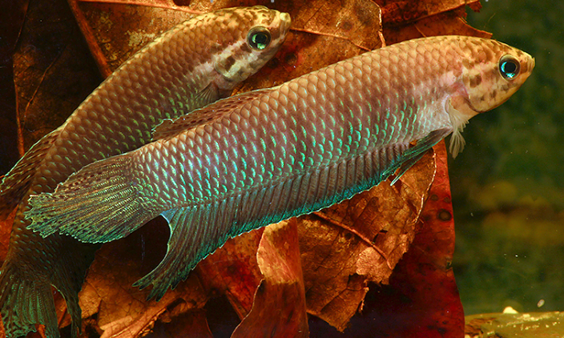

Systématique
- Ordre : Anabantiformes
- Famille : Osphronemidae
- Genre : Betta
- Espèce : B. simorum
- Groupe : Groupe Bellica
- Auteur : Tan & Ng, 1996

Betta simorum, le combattant du Simor, est une petite espèce labyrinthidé d'Indonésie endémique des tourbières d'eaux noires, très proche morphologiquement de Betta bellica mais distincte et endemique de régions différentes. C'est une espèce sauvage peu sélectionnée restant relativement proche des formes ancestrales du genre.
Le mâle atteint 6 à 8 cm de longueur standard (avec nageoire caudale jusqu'à 9 cm), tandis que la femelle mesure environ 6 à 6,5 cm. Le corps est long, élancé et fusiforme, légèrement comprimé latéralement avec une tête arrondie et bouche tournée vers le haut. La coloration de base affiche un brun-rougeâtre à brun-vert, avec des teintes jaune-vert iridescentes marquant les écailles. Le mâle arbore une gorge et des opercules teintés bleu-vert iridescent, les nageoires dorsale, anale et pectorales présentant des marbrures vert-brun; la nageoire ventrale vire au bleu. Le pédoncule caudal affiche des reflets jaune-vert. La femelle est plus terne, affichant un patron bleu-foncé plus subdué. Comme tous les bettas du groupe Bellica, le corps affiche un profil long et élancé à marges dorsale et ventrale presque parallèles.
L'espèce a été nommée en hommage à Thomas G. K. Sim et Farah Sim, ichtyologistes contributeurs à la connaissance des bettas indonésiens.
Betta simorum est une espèce plutôt paisible et peu agressive contrairement à Betta splendens, bien que légèrement territoriale. Les mâles tolèrent la présence les uns des autres en aquarium densément planté; les confrontations se limitent à des parades et chasing sans séquelles graves. L'espèce peut être maintenue en couple ou en petit harem (un mâle avec 2–3 femelles minimum), voire en groupe de plusieurs mâles avec ratio femelles plus élevé. L'espèce demeure timide et se tient généralement sous la végétation dense, refuge et zone ombragée. Elle émerge brièvement pour respirer à la surface via son labyrinthe.
Particularité remarquable : comme B. bellica, Betta simorum est un excellent sauteur et a été observé à sauter hors de l'eau pour capturer des proies sur des feuilles ou branches en surplomb. L'espèce possède un labyrinthe bien développé lui permettant de respirer l'air atmosphérique et de survivre temporairement en eaux stagnantes hypoxiques. Elle peut rester plusieurs semaines dans la litière humide de feuilles mortes durant les périodes de sécheresse en nature. Elle peut sauter hors de l'eau et le bac doit être couvert. Elle est sensible aux eaux alcalines ou dures, demandant un aquarium spécifique.
Mode : ovipare constructeur de nid de bulles; le couple n'a pas besoin d'être séparé avant le frai.
Après un courtage intensif, la femelle pâlit et des barres noires transversales apparaissent sur ses flancs, signaux de réceptivité. L'accouplement débute sous le nid de bulles : le mâle s'enroule progressivement autour du corps de la femelle, les deux corps vibrant en synchrone. Au moment du climax, la laitance et 5 à 20 œufs (généralement moins de 20, l'espèce n'étant pas excessivement prolifique) sont libérés. La femelle les attrape entre les nageoires pelviennes et son corps; le mâle les transfère ensuite dans son nid tandis que la femelle récupère ceux qui tombent. Ce cycle se répète jusqu'à épuisement des réserves ovariennes, processus qui peut durer plusieurs heures.
Après le frai, la femelle doit être retirée car le mâle devient agressif. Il assume seule la garde et l'entretien du nid, soufflant des bulles pour renforcer la structure et replacer les jeunes qui chutent. Les œufs éclosent après 24 à 48 heures. Les alevins demeurent au nid 3 à 4 jours supplémentaires le temps que les sacs vitellines se résorbent. Une fois la nage libre commencée, le mâle peut être retiré (risque de prédation). Les alevins acceptent immédiatement le micro-vers et les nauplii d'artémias fraîchement éclos.
Dimorphisme sexuel : modérément marqué. Le mâle est plus coloré que la femelle, arborant la gorge et opercules bleu-vert iridescent plus prononcées et les nageoires plus pointues et plus développées. La femelle demeure terne, bleu-foncé. À maturité, la papille génitale blanche devient visible chez la femelle.
Espérance de vie : environ 4 à 6 ans en captivité en conditions optimales. L'espèce sauvage peut atteindre une longévité comparable à B. bellica.
Betta simorum fréquente exclusivement les tourbières d'eaux noires, zones marécageuses peu profondes et cours d'eau lents associés aux forêts humides denses de Sumatra et Bornéo. L'habitat affiche une eau extrêmement acide (pH 3,0–4,0 naturellement) et très peu minéralisée, créant une coloration brun-foncé ("blackwater") due aux tannins et acides humiques libérés par la décomposition de matière organique. Le substrat est presque entièrement couvert par une épaisse litière de feuilles mortes, branches submergées, racines et débris végétaux. La végétation riveraine est abondante créant une couverture ombragée quasi-complète; peu de lumière directe pénètre la canopée forêstière.
Durant les périodes de sécheresse prononcée (saisons sèches), les habitats permanents se fragmentent en petites poches d'eau isolées où l'oxygénation devient critique. L'espèce survit à ces conditions hypoxiques en respirant l'air atmosphérique grâce à son labyrinthe, se réfugiant souvent au cœur de la litière humide pour plusieurs semaines jusqu'au retour des pluies. La température naturelle avoisine 23–26°C en surface; les zones profondes peuvent être plus fraîches. Cette adaptation écologique contraste nettement avec l'habitat stagnant chaud d'autres bettas.
Répartition

Origine naturelle :
- Indonésie : Sumatra (provinces de Jambi et Riau) et Bornéo (province de Kalimantan Barat, bassin de la rivière Kapuas).
- Localité type : marais près de Rantau Panjang, province de Jambi, Sumatra.
- Distribution limitée et fragmentée : bassin de la rivière Indragiri (Riau) et zones côtières associées.
- Très proche morphologiquement de B. bellica (Sumatra nord, Malaisie), mais géographiquement distincte et séparée.
Espèce rare mais plus disponible que B. bellica ou B. simplex en aquariophilie. Importée régulièrement depuis les années 1990 en petites quantités. Populations naturelles menacées par destruction des tourbières pour plantation d'huile de palme et drainage des zones humides.
Paramètres de maintenance
Température : 25 à 30 °C, idéalement 26–28 °C; l'espèce dépérit au-delà de 30°C.
pH : 3,0 à 6,0, fortement acide; pH 5,0–6,0 optimal; l'ajout de tourbe ou de feuilles mortes diminue naturellement pH.
GH : 1 à 2 °dGH (18–90 ppm selon source alternative), eau extrêmement douce; filtration sur tourbe fortement recommandée.
Courant : nul à très faible; filtration douce, filtre spongieux pneumatique si nécessaire.
Volume conseillé : minimum 50–90 L pour un couple ou petit harem; 80–100 cm de base recommandé. Substrat de sable fin recouvert d'une litière épaisse de feuilles mortes (chêne, hêtre, alder cones), bois flotté, racines, très planté, lumière tamisée, végétation dense.
Régime alimentaire
Régime : carnivore insectivore; études de 1994 révèlent préférence pour nymphes d'odonates (libellules et demoiselles aquatiques).
En aquarium, accepte aliments séchés une fois reconnus comme comestibles, mais demande régulièrement petites proies vivantes ou congelées : daphnies, artémias, vers de sang, vers de vase, petits insectes. Comme B. bellica, excellent sauteur capable de capturer proies sur branches en surplomb.
Distribution 1 à 2 fois par jour en petites quantités prudentes. L'espèce semble sensible aux excès alimentaires et à l'obésité. Jeûne occasionnel recommandé. Alimentation variée optimise santé, couleurs et performances reproductives.